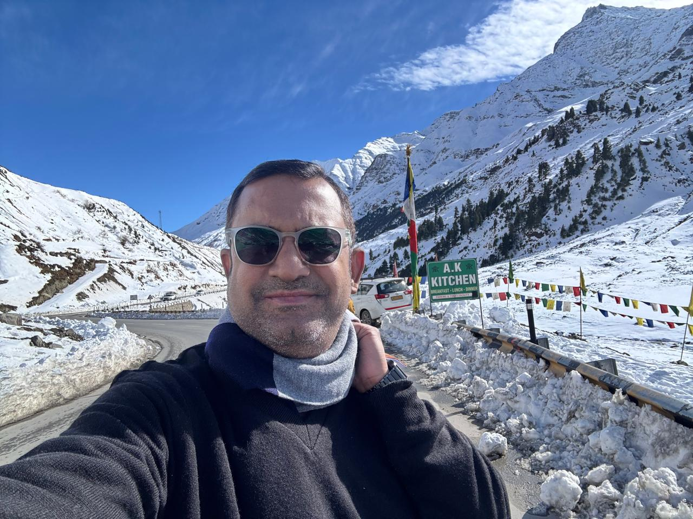

Resident Spotlight: Debanjan Chaterjee

A Little About You
Debanjan, tell us a little about yourself, your family. What should our fellow residents know about you?
Hey, I'm Debanjan. Fun-loving, problem solver, process-oriented, ambitious, down-to-earth person. My parents stay in Kolkata. My elder sister also stays in Kolkata. I stay here in Life Republic with my wife and my pet dog named Google.
How long have you been living in Life Republic? How has the journey been so far?
I'm staying in Life Republic for the last 2.7 yrs now. Journey has been good so far. Made some really good friends, neighbours. Sometimes challenging in solving Society lingering issues.
What made you choose Life Republic as your home?
Big Township, Lots of greenery, well planned, Multiple entry and exit points, well maintained, cosmopolitan crowd.
Is there something interesting about you that most of your neighbours probably don't know?
I love hills more than beaches.
How many languages do you speak? Do you enjoy learning or speaking different languages?
I speak Bengali, Hindi & English. I can also understand Marathi when spoken slowly. Interestingly, Marathi has recently become my new favourite language, and I'm currently learning it! I love comparing and analysing different languages and their patterns. For example, everything related to food and drinking in Bengali is referred to as "Khabo", whereas in Hindi, liquids are associated with "Peena" and solid food with "Khaana".
Your Life at Life Republic
Do you remember your first impression of Life Republic when you moved in? Has it changed over the years?
I'm a big believer of environment as it shapes you. Life Republic has given me most of it. There will never be perfection but the ratios matter. Big spaces, so much of greenery, plan spaces for walking, running, good roads were my first impressions and adequately spaced homes. It has changed positively after moving here with the circle of friends and neighbours I have today.
What's the one thing you enjoy most about living here?
People, thoughts, perspectives.
In your opinion, what makes Life Republic special compared to other residential communities?
Its people, and its Infra Space.
What's one thing about our community that makes you feel proud?
Getting together when you are in Need.
Your Journey in Community Involvement
Many residents know you for your active involvement in community matters. How did this journey begin?
From a problem solver mindset. I can't resist to solve things if I see something is not dealt with or becoming recurring transactions.
You were actively involved in coordinating with the builder initially, and now you're involved in working with the CHS. What keeps you motivated to stay involved?
I believe it's our duty/responsibility to fix things to help build this community. After all it’s a bigger home for us apart from our existing home where we stay. This way we keep the environment sustainable for us to live in. After all we need to keep the environment happy for us to be happy.
With so many personal and professional commitments, how do you manage to find time for community activities?
You always have time, it’s a matter of setting priorities and plan it accordingly. We might not be present in every discussion or meeting, but helping when needed is of utmost importance.
Having interacted with the builder earlier and now with the CHS, how has your experience been? What has changed?
It has been an ever learning experience on Process, real estate process, people, behaviour, communication and many more. Stakeholders has changed, the Strategy to push for changes has changed.
Is there any particular incident or experience during this journey that you will always remember?
Normally not lot of residents will come for meetings and discussions, but during the initial stages we had to visit the builder to work on the stp water issues and some other issues. We were more than 85+ people at the LR sales office just to showcase the power of unity. We were then called to the Builder office to sit and talk and hear our issues.
Community involvement sometimes means dealing with different opinions and expectations. How do you handle disagreements or challenging situations?
We as humans will always have our own perspective which we build from our past experiences and knowledge, so this is a good thing. Disagreements is part of community we need to accept that to have a healthier discussion. We only need to put in our thoughts, pro's and con's of a certain proposal. If its good others will automatically agree to it or they will propose a better plan which is also better since we are trying to put a solution to our challenges where we all stay together. If we can get this approach in our mindset then life is actually easy.
What do you think residents can do to make the work of people volunteering for the community easier?
Work together, don't have a mindset, that let me relax there are people to take care of such things. Whenever you are walking, running or sitting around the premises, see around and understand what could be improved and then just take a lead to talk to the right stakeholders to get things done, if it doesn't happen, we have the power of unity to get it done. If we all pick at least 1 item to solve, things will get into an awesome space in few months. So pick up just 1 thing, don't talk much, deliver action, discuss in the grp to ensure you have all the background of that challenge and probable solution. Pick up, lead and deliver. We need to work together to make our society a better place to stay.
Do you sometimes feel that more residents should come forward and participate? How can we encourage that?
I think we should share all stakeholders contact with everyone, remove the designation procrastination outcome. Share more on groups and help each other to reach the goals rather than criticizing. Have owners Pot Luck once in 6/12 months to build that relationship and trust to get things moving.
Beyond Community Responsibilities
What do you usually enjoy doing when you're not busy with work or community matters?
I love reading and learning new skills. I'm a certified Numerologist. Face Reading, Graphologist and aspire to become a Life Coach.
Do you have any hobbies or passions that you wish you had more time for?
Learning New Skills and travelling to new places.
How do you like spending your weekends?
Mostly completing Household chores, other than that little travelling, partying/spending time with friends & families, Watching TV or Solving a challenge that I'm aware of.
Are there any sports, cultural activities or social initiatives that you enjoy being part of?
I'll love to be part of social activities like donating clothes/food to the needy.
Cricket or football? And which team do you support?
Cricket, India Team. Though I only watch highlights.
Your Thoughts and Ideas
If you had the opportunity to do something that would genuinely make people's lives better, what would you choose to do?
Hear from them what will make their live happy in LR through surveys and then work towards that, after all if we make the environment supportive of what we manifest then eventually we all succeed in life.
What is one initiative or facility you'd love to see introduced in our community?
Transparency in communication from Management Committee.
What do you think would help make Life Republic an even happier and more connected place to live?
Have a connected platform (not WhatsApp) where we can read LR News (you have started this and a wonderful initiative, Big Congratulations to you on that), and then people can share their opinions on such posts. Then all shops in 1 place, then connecting with fellow residents for Car-Pooling, sports, events, promoting their work, etc. I'm already working on this.
If a new family moved into Life Republic tomorrow, what would your advice to them be?
Walk up to your neighbour with a plant and introduce yourself. This way communication gets started and the community comes together slowly and steadily to help you settle in. Walk in with an open mind and remove judgement from the equation.
Looking back at your younger days, is there one piece of advice you'd love to give your younger self?
Be peaceful, listen more, judge less.
Is there someone or something in life that has had a big influence on the person you are today?
Sadguru, he has been an inspiration on how to handle life overall. I love his logic towards things. Example: Just for Fun: you bought your favourite car and then you are stuck in traffic jam. You are now frustrated, irritated. What an Irony, you are not ready to spend time inside your favourite car for which you worked so hard. :) Serious Ask, My Own Remedy :) please try this: Whenever you are angry on the situation/person, just give a broad smile. Don't worry about what will people think. You will notice within less than 10 sec your anger is gone, this is the magic of a smile, completely free and we don't use it enough. Another Irony :)
A Few Questions to Wrap Up
What keeps you going when community work gets challenging or when appreciation is not always forthcoming?
I realize that the issues also affects me, so anyways I get involved. It's to improve the environment around me.
What's one message you'd like to share with all your fellow Life Republic residents?
Let's meet up, enjoy time together, call for help whenever wherever required. We need to support each other in any aspect possible. Just ask.
Finally, if you had to describe Life Republic as a person, what kind of personality would it have?
Ever Expanding. Come for the space. Stay for the people.